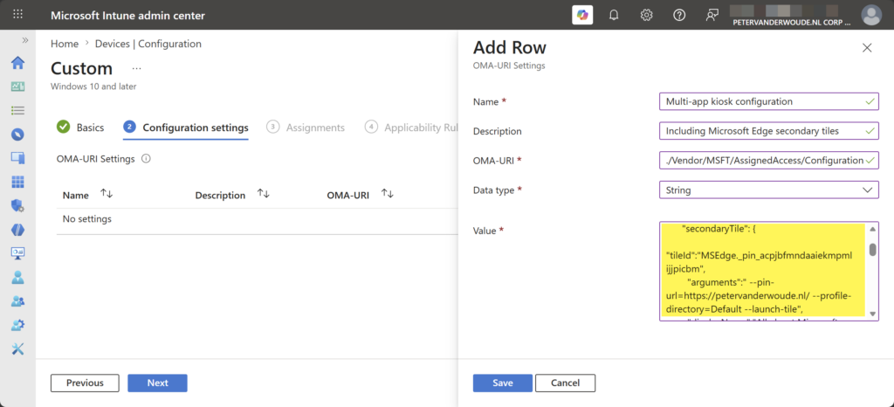
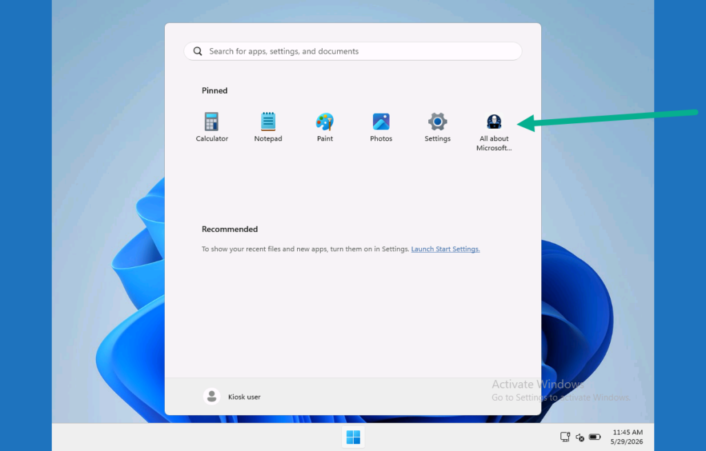

This week is all about Microsoft Edge secondary tiles. Microsoft Edge secondary tiles are website shortcuts that are pinned to the Start layout. Those pins provide quick access to specific websites directly from the Start layout. Basically, those pins function similar to any other app shortcuts that are pinned to the Start layout. Any user can create website shortcuts in the Start layout by simply navigating in Microsoft Edge to Settings > More tools > Pin to Start. There can scenarios in which it might be useful to already pre-pin specific websites for the user. The most common scenario is a multi-app kiosk mode configuration in which specific websites must be pinned for the users of those devices. That’s where Microsoft Edge secondary tiles become useful. This post will provide a closer look at configuring Microsoft Edge secondary tiles and experiencing that in multi-app kiosk mode.
Configuring Microsoft Edge secondary tiles
When looking at the configuration of Microsoft Edge secondary tiles, it is basically mainly about configuring the Start layout. That being said, when using it to configure a multi-app kiosk mode, it is important to make sure that Microsoft Edge is an allowed app. For that it is recommended to add the following to the allowed apps list.
<App DesktopAppPath="%ProgramFiles(x86)%\Microsoft\Edge\Application\msedge.exe" />
<App DesktopAppPath="%ProgramFiles(x86)%\Microsoft\Edge\Application\msedge_proxy.exe" />
<App AppUserModelId="Microsoft.MicrosoftEdge.Stable_8wekyb3d8bbwe!App"/>The most important thing for configuring Microsoft Edge secondary tiles is the actual configuration of the Start layout. That part is similar for any configuration of a Start layout and a multi-app kiosk mode. When looking at the pinned list of the Start layout configuration, that property can contain the key of Microsoft Edge secondary tiles. The easiest method to configure that key is by pinning the required website to Start and using Export-StartLayout to export the configuration. That export contains the secondary tile configuration with an id (of the tile), the arguments (for the pinned url), the display name (of the pinned url), the small icon path (for the pinned url), the small icon (the actual base64 encoded small icon), the large icon path (for the pinned url), and the large icon (the actual base64 encoded large icon). Below is an example for this blog. The actual base64 encoded icons are left out to safe some space and to keep it readable.
<v5:StartPins>
<![CDATA[
{
"pinnedList": [
{"packagedAppId":"Microsoft.WindowsCalculator_8wekyb3d8bbwe!App"},
{"packagedAppId":"Microsoft.WindowsNotepad_8wekyb3d8bbwe!App"},
{"packagedAppId":"Microsoft.Paint_8wekyb3d8bbwe!App"},
{"packagedAppId":"Microsoft.Windows.Photos_8wekyb3d8bbwe!App"},
{
"secondaryTile": {
"tileId":"MSEdge._pin_acpjbfmndaaiekmpmlijjpicbm",
"arguments":" --pin-url=https://petervanderwoude.nl/ --profile-directory=Default --launch-tile",
"displayName":"All about Microsoft Intune | Peter blogs about Microsoft Intune, Microsoft Intune Suite, Windows Autopilot, Configuration Manager and more",
"packagedAppId":"Microsoft.MicrosoftEdge.Stable_8wekyb3d8bbwe!App",
"smallIconPath":"ms-appdata:///local/Pins/MSEdge._pin_acpjbfmndaaiekmpmlijjpicbm/SmallLogo.png",
"smallIcon":"",
"largeIconPath":"ms-appdata:///local/Pins/MSEdge._pin_acpjbfmndaaiekmpmlijjpicbm/Logo.png",
"largeIcon":""
}
}
]
}
]]>
</v5:StartPins>Note: These snippet can be used in combination with the configuration as shown in this post describing the basics for setting up multi-app kiosk mode configuration on Windows 11. The only different would be the <profile> section.
For applying the multi-app kiosk mode configuration, it is still all about the AssignedAccess CSP. That CSP can be used to configure a Windows device to run in multi-app kiosk mode. Once the CSP has been executed, the next user login that is assigned with the multi-app kiosk mode puts the device into the specified kiosk mode. Within Microsoft Intune a Custom profile can be used to apply a multi-app kiosk mode configuration via the AssignedAccess CSP. The following nine steps walk through applying the multi-app kiosk mode configuration with autologon by using the configuration node of the AssignedAccess CSP.
- Open the Microsoft Intune admin center navigate to Devices > Windows > Configuration profiles
- On the Windows | Configuration profiles blade, click Create > New policy to open the Create a profile page
- On the Create a profile blade, select Windows 10 and later > Templates > Custom and click Create
- On the Basics page, provide a unique name to distinguish the profile from other custom profiles and click Next
- On the Configuration settings page, as shown below in Figure 1, click Add to add rows for the following custom settings and click Next
- OMA-URI setting – This setting is used to configure multi-app kiosk mode with a Microsoft Edge secondary tile
- Name: Provide a unique name for the OMA-URI setting to distinguish it from other similar settings
- Description: (Optional) Provide a description for the OMA-URI setting to further differentiate settings
- OMA-URI: Specify ./Vendor/MSFT/AssignedAccess/Configuration as value to configure multi-app kiosk mode
- Data type: Select String as value
- Value: Specify the created XML-file as value to set the required multi-app kiosk mode configuration
{kind=link}

- On the Scope tags page, configure the applicable scopes and click Next
- On the Assignments page, configure the assignment and click Next
- On the Applicability rules page, configure the applicability rules and click Next
- On the Review + create page, verify the configuration and click Create
Note: At some point in time this setting might become directly available within Microsoft Intune.
Experiencing Microsoft Edge secondary tiles in multi-app kiosk mode
When the multi-app kiosk mode configuration is applied, it is pretty straightforward to experience the behavior. The provided example should create a multi-app kiosk mode with a Microsoft Edge secondary tile. That secondary tile is the website shortcut that is pinned to the Start layout. The rest of the look-and-feel is similar to what was previously created in the earlier post about configuring multi-app kiosk mode on Windows 11.
{kind=link}

More information
For more information about Microsoft Edge secondary tiles, refer to the following docs.
Discover more from All about Microsoft Intune
Subscribe to get the latest posts sent to your email.